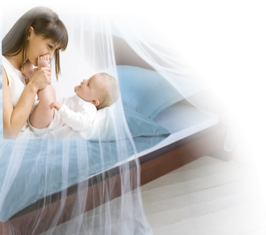
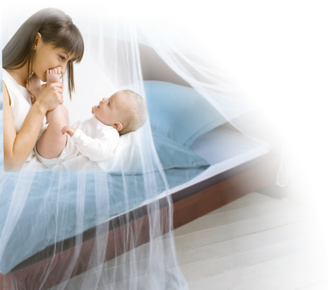

Malaria Microscopy e-Learning Course
Contact Information
For issues with using this software, you can contact the focal person who distributed the pilot course for the fastest response.
You may also email MalariaMicroscopyCourse@gmail.com with any questions or feedback.
The Malaria Microscopy e-Learning Course is currently in development by Global Good/Intellectual Ventures Lab and Amref Health Africa. The contents of the course are fully protected by copyright. However, the publishers will gladly consider any request for permission to reproduce part or whole of the course materials with the intention of increasing its availability to those who need it, and welcome enquiries from individuals or organisations wishing to use any material from the course for non-commercial purposes. The publishers also welcome feedback on the course, and invite constructive comments and suggestions.
Authors and Reviewers (in alphabetical order)
- Christine Bachman—Global Good, Bellevue, USA
- David Bell—Global Good, Bellevue, USA
- Jane Carter—Amref Health Africa Headquarters, Nairobi, Kenya
- Anderson Chinorumba—WHO AFRO, Harare, Zimbabwe
- Matthew Horning—Global Good/Intellectual Ventures Laboratory, Bellevue, USA
- David Isaboke—Amref Health Africa Headquarters, Nairobi, Kenya
- Ken Lilley—Australian Army Malaria Institute, Brisbane, Australia
- Earl Long—Consultant Parasitologist, Atlanta, USA
- David Ocheng—Amref Health Africa Tanzania, Dar es Salaam, Tanzania
Acknowledgements
The authors would like to thank Global Good for their financial support to realise this project.
Our extended appreciation goes to Amref Health Africa, the Shoklo Malaria Research Unit (SMRU), University of Peru Cayetano Heredia (UPCH),
and the Hospital of Tropical Diseases (HTD) for providing microscope slides and sharing relevant images to enhance learning for students.
Special thanks to David Bell and Jane Carter for their strategic stewardship and the following individuals who participated in determining the course
curricula: Cornel Arima, Rachel Achilla, Earl Long, Christine Bachman, David Ocheng, Peter Mwatha, Matthew Horning, Ken Lilley, Cary Champlin, Slla Thiam, Jane Carter,
Julius Tome, Ephantus Murigi, Josephine Namboze, David Bell, David Isaboke, Stephen Munene, Zipporah Katiku, and Anastasiah Kimeu.
The virtual microscope and slide viewing software was developed by PathXL, and the course was designed and created by Bernard Kikechi and Diana Mukami at Amref Health Africa, and Vikas Agrawal and Matthew Horning at Intellectual Ventures Laboratory.


 
